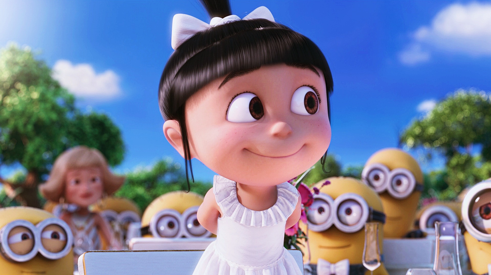
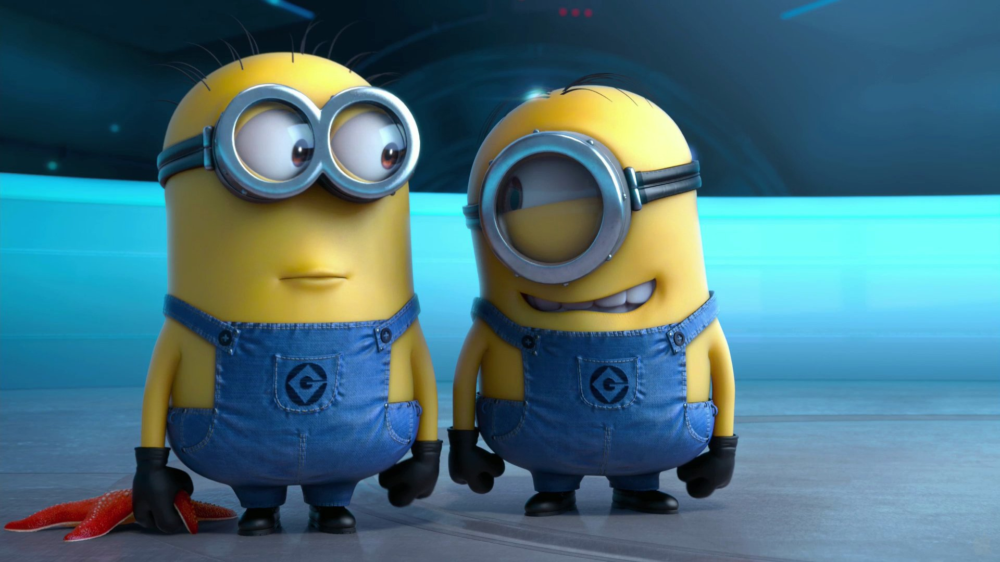
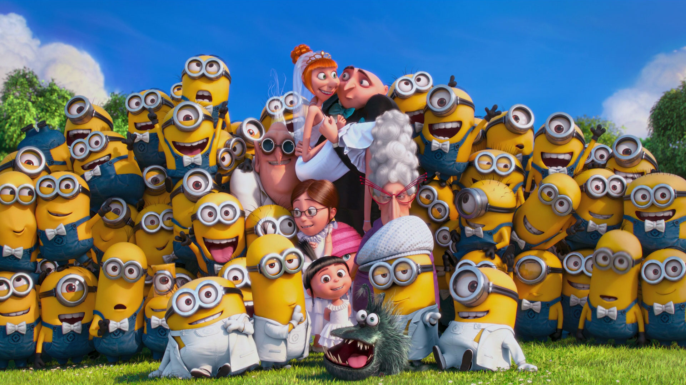

Wanderlust. Dream big or small, always on the way of pursuing something. About to start my programmer career.
Read my stories|  |
Despicable MeWhen a criminal mastermind uses a trio of orphan girls as pawns for a grand scheme, he finds their love is profoundly changing him for the better. |
|  |
Despicable Me 2When Gru, the world's most super-bad turned super-dad has been recruited by a team of officials to stop lethal muscle and a host of Gru's own, He has to fight back with new gadgetry, cars, and more minion madness. |
|  |
Despicable Me 3Gru meets his long-lost charming, cheerful, and more successful twin brother Dru who wants to team up with him for one last criminal heist. |